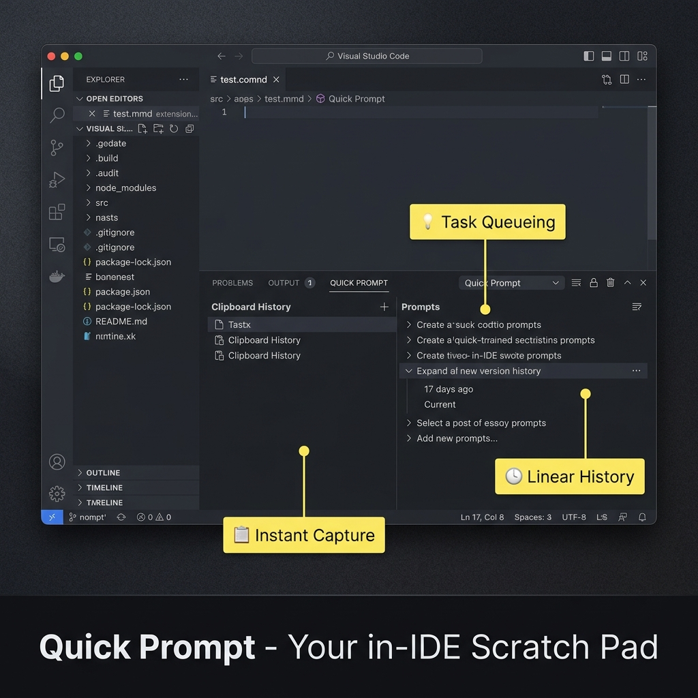
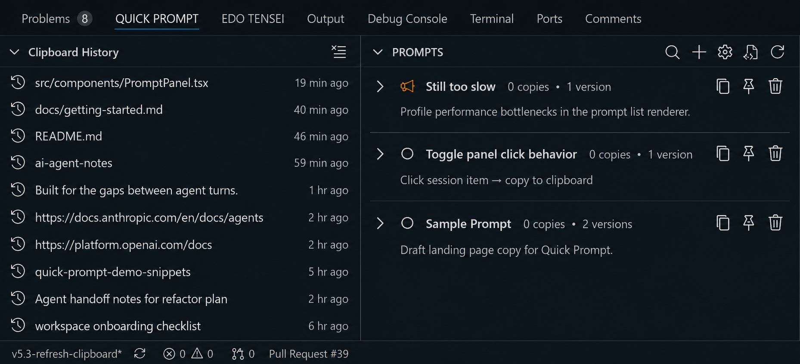

Think while
AI works.
Your in-IDE scratch pad for AI-assisted development. Capture next tasks, store reusable snippets, track clipboard history — without switching windows or breaking flow. View source on GitHub →

Built for the gaps between agent turns.

Capture the next thought
Agent still running? Save the next instruction, snippet, or follow-up as soon as it appears. Quick Prompt keeps the idea inside VS Code instead of another tab or sticky note.
Pin clipboard into prompts
Clipboard history catches copied code, paths, and notes while you move through a task. Pin the useful fragments as saved prompts when they should become reusable handoff material.
Let titles clean up the queue
Local AI can generate semantic titles for saved prompts, so rough captures become readable entries without sending content off your machine.
Recall everything with Alt+P
Search prompts and clipboard history from one palette. Type a few characters, pick the right item, and stay in the editor.
Send it to the agent chat
Pick the saved prompt or clipboard fragment, then send it into your agent chat window when the next turn is ready. The handoff happens from inside VS Code instead of another note app.